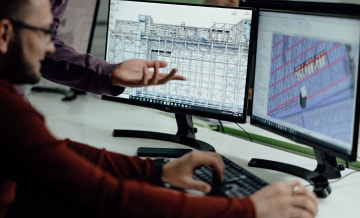

Have any questions? Contact us!
Boosting productivity for Scan to BIM Projects – Proven Tips & Tricks
Everyone knows how a scanner works – you put your document into a machine, and the information is transferred to your computer screen in a matter of seconds. Scan to BIM works similarly. A laser scanner is used to ensure exact 3D scanning of real project conditions. Then the scanning data is imported into the 3D modeling environment, either to create exact models or obtain data about up-to-date information.
Scan to BIM is a process of three-dimensional laser scanning of the physical environment to create its exact digital representation. This can be used later for design, progress evaluation, or assessment of capabilities.
Powerkh Point Cloud to BIM modeling services could help you get more precise results. The main goals of similar projects include:
- Receiving precise information about existing conditions to use in the process of reconstruction and renovation .
- Quality control in real estate development and progress tracking during the construction.
- 3D modeling to be used in 4D design and architectural visualization.
- Project visualization – from CGI up to VR and AR.
- Reducing the site visits and manual surveys for all project participants. It also helps to enroll a remote team for such projects.

Scan to BIM projects vary according to building types, final goals, sizes, required discipline, and more. On top of that, the tasks often change during the project, leading to a lot of rework. Each project is always unique, time-consuming, and challenging. Moreover, a person seeing a model for the first time finds it hard to evaluate the quality of the prepared model. That's why the positive project outcome may seem obscure due to so many challenges.
Despite all these obstacles, the projects can be effective and delivered with high quality. What you'll have to do is to choose the right software, plan everything thoroughly, opt for efficient modeling, and automate the routine tasks. We'll deal with all of that in our article, so keep reading.
Scan to BIM ecosystem and software
Software for BIM involves more than just a program or two. It’s an entire complex of digital software, which can be utilized by all design and construction participants with maximum effect.
The list of software options that can be used to perform Scan to BIM tasks is relatively short. The most popular basic programs are Revit, Archicad, and Vectorworks.
When the time comes to choose software for working with BIM, a universal solution, unfortunately, doesn’t exist. Focus instead on the results you’d like to achieve using BIM, and choose the software that will turn your plans into reality. For this purpose, you can use a wide range of different tools.
Our company opts for Revit . What’s so special about it? Here are several characteristics:
- Revit is one of the most widely-used tools on the market that works with all facets of a construction project. In addition, its modeling can be easily converted to any other program and used for further designs.
- It’s inter-operable. You can extend your Revit possibilities by installing plugins and graphical programming using Dynamo.
- All participants involved in the process can work simultaneously and coordinate their work at the same time.
- Revit creates models with interconnected components. This means that if you replace a wall, all elements placed upon it will change their location in conjunction.
- Revit’s generative design function allows for alternative design at any level of detail, even while the project is in progress.
- Possibility to work with Naviswork. This program helps coordinate jobs effectively and conducts a comprehensive project analysis.
It’s worth saying a couple of words about secondary programs used to view scanning results – Dynamo, Navisworks, and Leica TrueView, or similar:
- Using Dynamo, you can train Revit to perform new actions: draw up shapes, work with data, update properties, and more. Instead of a complex code, Dynamo uses simple blocks that create rules Revit will follow. This is called graphical programming.
- Navisworks covers various tools and means that let you check projects you’ve created. Thanks to integration tools and tools for calculation and data exchange, users can coordinate the introduction of changes into any aspect of the project, eliminate contradictions, and prepare the planning implementation before construction starts.
- Leica TrueView or similar plugins can also be used for simple and convenient point cloud data exchange. This program allows all project participants to collaborate using state-of-the-art solutions to access, view, and analyze digital data.
No matter which software you choose for your work, it doesn’t guarantee the desired and lasting results. Other factors also add to the project’s success. Let’s get down to them now.

Scan to BIM Services
Powerkh - a trusted Scan-to-BIM service provider. 10+ highly qualified BIM/VDC experts. Experience in Point Cloud to BIM modeling & 2D drawing services.
Read moreProject planning
Although challenges of various complexity aren't uncommon in the course of design and construction projects, it’s a shame when they occur right after the beginning. Let’s have a look at the most common issues that may arise during the initial stage of work with Scan to BIM include:
- The complexity of project evaluation, work with incoming data bulk and file storage.
- Determination of the precise work scope.
- Communication during construction projects which involve multiple participants and requires detailed documentation, tools, and more.
Now let's see into each statement.
Project evaluation
Often, the data necessary for objectively evaluating timeframes are missing during the initial stages of the project. To evaluate the project, one needs the following: site address, pictures of the building (both inside and out), and building plans, as well as drawings of all kinds. But even in cases where information is limited, Powerkh performs preliminary timing estimations for the project based on previous experience.
Scope of work
There are various building types. It is necessary to understand what building the model is created for to identify proper modeling priorities. For example, it’s crucial to preserve the facade's appearance when it comes to historical buildings, with particular attention paid to modeling every detail of the building's face. Yet when it comes to modern facilities, geometric parameters and elements of the building must be on the fore. It means that there is no critical need to pay so much attention to every detail of the facade units. With that said, we once again emphasized the importance of goals determining during the project assessment stage.
Level of detail
A deep understanding of project goals is the first and foremost condition to achieve the required level of detail in a 3D model. Moreover, all the specification requirements should be to be crystal clear for both client and contractor. Two main systems to evaluate requirements specification can help everyone to stay on the same page. We're talking about Level of Development Specification (LOD) by BIM Forum and the UK standard ISO 19650 . Mind that it usually takes some time to study those documents in detail.
- BIM Forum standard is usually used in the USA and regions under its influence. LOD structure was proposed by AIA (American Institute of Architects) and developed by BIM Forum. The document is a standard used to define the development state of various systems, fittings, and components within a BIM model. This standard ensures communication and project implementation while simplifying the detailed definition of BIM stages and results.
- ISO 19650 was developed to help manage information using BIM throughout the entire building lifecycle. This document includes strategic planning of a project, initial design, engineering works, project development, everyday use, maintenance, modernization, repair, termination of building service life, and more. Description of detail levels in project implementation occupies a separate clause in the document.
To eliminate the above-mentioned obstacles, it’s necessary to visualize the project outcomes. However, if we compare time spent on building modeling according to LOD2 and LOD4, it will differ significantly. With LOD2, modeling a building might require a few hours of work. With LOD4, it might be several weeks, taking into account the detail level, which doesn't matter that much in LOD2. The fact that every level of detail has its permissible variations is fundamental in modeling. It's 50 mm in LOD2, in LOD3 – 30 mm, and in LOD4 – 15 mm, which also significantly influences the amount of time spent on the project.

Request for information (RFI) log
Throughout large-scale projects, it’s important to keep all questions and problems in one place. This way, one can return to a certain issue at any moment without wasting time. We use the RFI log for this purpose. The RFI log allows the client, constructor, and contractor to register and follow issues throughout the project and works well when all parties use it. As long as it prevents data loss, it spares time one spends restoring information, which is critical for some projects.
Project Backlog
The main tool at the project planning stage is Project Backlog. It’s suitable for planning and assessing task timeframes and can be used with projects of any scale. You can see there all the tasks to be completed during the whole project, which keeps everyone updated and prevents deviations from the initial schedule. But mind that while you're planning a project, it's important to divide it correctly into separate tasks. Split the tasks so that they aren't complex and can be completed by a single person. In addition, the sequence of project implementation plays an important role. The project structure should offer the possibility to implement with maximum convenience and consistency. The correct sequence of tasks will help save time by avoiding unnecessary rework or returning to previous tasks unless it's really required.

File storage
The client and customer need to have the same folder structure and file naming system (whether in the cloud or local storage) throughout the project. One more point in favor of Revit – has its own cloud storage, which significantly simplifies large file exchange.

Communication
Last but not least is the selection of communication channels. It's critical to be updated and be able to receive files and make video calls using the same app. Remote work during the lockdown speeded up the development and adoption of numerous apps we can choose from.
Our Case Studies
Templates and standards
Projects vary significantly. Even two similar buildings may take different times to model, depending on the specified project targets. As a consequence, the BIM managers may face issues with project timeframes, quality, and cost. Luckily there is a way to address those issues, and it's using templates, standards, and family libraries prepared in advance.
- Template. All BIM projects have a list of steps repeated from project to project. The same occurs with Scan to BIM. One of the best ways to save time during modeling is to get ready beforehand. You can do that by creating a template with all necessary families, notes, preset views, sheets, and more. The use of a project template should be the starting point in new model creation. Use templates to meet all the required standards, such as units of measurement, lineweight, view scale, and so on. Moreover, a project template contains ready elements of a 3D model. So make use of it.
-
Logic in family modeling and family library.
It’s vital to unify recurring objects in modeling. A library of such
elements significantly decreases the time needed to perform tasks. We’ve
developed a family library that contains parameter families for various
levels of detail and various building types.

- Standardization of work delivery. Scan to BIM project requires meticulous work to achieve better results in a short time. It means that modeling procedures, family modeling correctness, construction stages, and many other things should be prescribed.

Now let’s proceed to one of the most complex yet fascinating chapters in our article - the one dealing with points cloud.
Modeling aspects
Even the most advanced users may feel ill at ease when they encounter point cloud, leading to element modeling errors and significantly limiting further model use. Below, you’ll find several tips that could help you avoid many problems.
- Geometry in each model must be structured. Revit offers many tools that can help you with that, including worksets, which simplify control and allow for content filtering. For example, if you need to see walls only, you can leave this single workset active. On the screenshot below, you may see a standard range of worksets we use in our working template.
- Wall by Mass. If the level of precision in a project is high, say LOD4 (15 mm), and you model an old building, most likely it will be tilted or uneven. Until 2021, it was impossible to attain this effect in Revit by default. Besides, even in the 2021 version, this option has its limitations. To create a wall like that, it’s worth using the Wall by Mass tool. But mind that applying ‘Join’ to such a wall is impossible.
- To avoid problems, the walls should be attached to floors or upper levels. All walls should be divided into levels and have bindings divisible by 5 mm. All widths and other dimensions should be divisible by 5 mm as well. This also applies to all types of families, like floors, roofs, beams, and so on.
- The best solution for building “wavy” floors is to create a grid using modify points, and raise points up to the necessary height. This will prevent both the automatic creation of numerous lines when building the floor and problems with discarding previously created slopes.
-
You'll also have to consider that it’s better to create a floor when outer walls are already prepared. Changes in floor lines after modifying points could reset them, which will lead to multiple reworks and loss of precious time.

-
Always try to create stairs level by level. It will help you to prevent mistakes and enable creating railings automatically. Don’t divide the stairs into flights between the floors, even if it makes modeling more precise.

- After the modeling is completed, it’s necessary to hold a good quality assurance (QA). Most inaccuracies and mistakes might be easily revealed during the visual examination of a 3D model. For this purpose, try using a scope box with point clouds. Examining the 3D model vertically and horizontally (as a scanner does) with a scope box, you can locate all inaccuracies in the model. It’s also convenient to use worksets for visual examination and specifications such as offsets, family materials, and impractical information in family parameters. Run ‘purge’ after.
-
Always correct all errors that emerge while working with the model. These errors may prevent further usage of the model after you send it to your client. Some errors can be easily corrected after they’ve been identified in a pop-up window. But sometimes, this is impossible. Here’s some advice on how to simplify your work with warnings:
- Find the ‘export’ button in the same pop-up window and export them into a pdf file. It'll let you copy error numbers and quickly find them using the Revit standard search function.
- Don’t bother correcting “Line in Sketch is slightly off-axis and may cause inaccuracies” errors. Such errors appear when the level of detail is high, and one models something very precisely, lines created at non-repeated angles being the reason this error appears.
- If a solution to a problem cannot be found, or Revit identifies an error when there is none, cut the element and paste it into the same spot. In 90% of cases, this solves the problem, and the error disappears.


Next, we’ll revise what Dynamo is.
Never miss a new blog post from us!
Dynamo and plugins
Dynamo is a visual programming tool that works as a plugin to Revit. Dynamo extends Revit’s standard functions by providing easier access to Revit API (Application Programming Interface). With Dynamo, instead of writing code, you create programs by manipulating graphic elements called ‘nodes’.
In regard to Scan to BIM, this could help with other projects as well. For example:
- Automatically create sheets with existing views.
- Automatically fill in necessary parameters.
- Place legends/specifications on the correct sheets.
- Automatically divide families into worksets.
- Delete unnecessary elements that performed auxiliary functions in family building, like reference planes/lines.
- Check the location of families against levels.
- Automatically calculate the volume and area of elements and export information into an excel file.

To boost productivity while working with Revit, it’s possible to automate some processes using additional Revit plugins. Below you’ll find several plugins that can assist us when working with Scan to BIM:
- NAVVIS – this plugin simplifies work in Revit. By adding a window where a 3D visualization of the place you’re currently working on is shown. Works similarly to TrueView.
- Isolate Warnings – a great free plugin that helps to visualize all warnings in your model.
- Family Reviser – a plugin that helps you change the names of your families and add necessary prefixes/suffixes.
- Warchart – a plugin that visualizes warning events and helps resolve them.
- InfiPoints – a plugin that helps to automatically create pipes, air ducts, and steel works. One of the greatest advantages of InfiPoints is the possibility of importing point cloud data from the three-dimensional environment as well as viewing and editing with high productivity, without limitation in terms of data size.
That was everything we planned to tell you today, so let’s sum up.
What's next?
Despite certain challenges, most operations we’ve discussed in this article are pretty simple to comprehend and perform. With that said, they can considerably improve the modeling quality and speed. So try sparing time to create a family library and standard, and rest assured, it will boost your productivity and performance.
Do you have questions left or are you planning to boost productivity for the Scan to BIM project?
Let’s talk, Powerkh is ready to assist!

Have a BIM Project? Talk To Us.
-
Enhancing Productivity in BIM Projects: Best Tips & Strategies
Yevhen Surzhan
Tetiana Rapina
 -
Boosting productivity for Scan to BIM Projects
Yevhen Surzhan
Tetiana Rapina

-
7 Benefits of BIM Services in Construction
Kostya Rapina

-
How BIM Works
Yevhen Surzhan

-
The Benefits of Using Laser Scanning in Construction You Can’t Miss
Kostya Rapina

-
Top 30 Architectural Rendering Companies
Tetiana Rapina

-
Choosing Best BIM Software for Your Project in 2021
Yevhen Surzhan

-
As-Built Drawings 101: All You Need to Know
Kostya Rapina

-
BIM Outsourcing vs in-House Teams
Kostya Rapina

-
Introduction to Virtual Design and Construction
Yevhen Surzhan

-
Construction RFI: Template, Best Practices
Kostya Rapina

-
How to Hire a BIM Team
Yevhen Surzhan